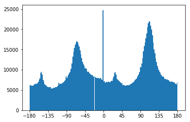
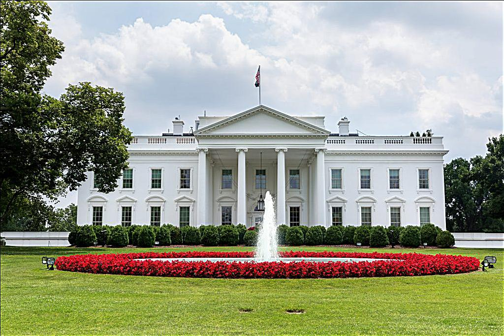
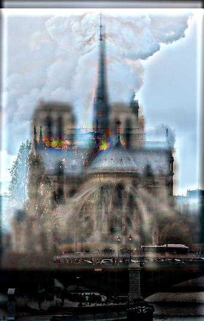

The goal of this project was to implement image blurring using a Gaussian Kernel, image straightening by counting horizontal/vertical edges, image sharpening, hybrid images, gaussian/laplacian stacks, and multiresolution blending.
Part 1: Fun With Filters
Part 1.1: Finite Difference Operator
The partial derivative in x and y were taken of the cameraman image by convolving the image with the finite difference operators.
partial derivative in xpartial derivative in y
The next step was to compute the gradient magnitude image, which is done by taking the square root of the sum of the squares of the derivatives in x and y. Then, the gradient magnitude image was converted into an edge image by binarizing the pixel values, giving values less than a threshold of .14 to 0, and 1 otherwise.
original cameraman imagegradient magnitude imageedge image
Part 1.2: Derivative of Gaussian (DoG) Filter
It is apparent that there is a lot of noise in the edge image produced. This is fixed by applying a gaussian blur by convolving a gaussian kernel with the edge image. The convolution from the previous part can be convolved with the gaussian kernel to create a single convolution that produces a better edge image. The white dots/noise created from the grass in part 1.1 is now removed.
edge image with gaussian blurpartial derivative in xpartial derivative in y
Part 1.3: Image Straightening
In order to automate the image straightening process, I first rotate the image by a certain degree in a predetermined range [-20, 20). Before doing anything, I blur the image with a gaussian kernel in order to have a smoother image and have a more uniform gradient angle. Since a rotation creates unneeded empty space in the image, I cropped out the outer fifths of the image and only used the center when calculating the gradient angles using the formula arctan2(dy, dx). dy and dx were the partial derivatives of the image, calculated similarly to part 1.1. I then count the number of gradient angles that are within +/- 2 degrees from 90 and 180 degrees for each rotation, and take the maximum count in order to maximize the number of horizontal and vertical edges.
original imageimage rotated by -4 degreeshistogram of gradient angles of original imagehistogram of gradient angles of rotated image
original imageimage rotated by 16 degreeshistogram of gradient angles of original imagehistogram of gradient angles of rotated image
original imageimage rotated by -10 degreeshistogram of gradient angles of original imagehistogram of gradient angles of rotated image
This picture probably failed because there were multiple perspectives of straight, from the ground to the kid to the buildings behind. It also likely that the rotation range is out of the one I provided.
original imageimage rotated by 18 degreeshistogram of gradient angles of original image

histogram of gradient angles of rotated image
Overall, there still seems to be zero spikes in the histograms, despite using arctan2. I have noticed that it is more common and pronounced in images with lower resolution. This might be because the gaussian blurs blur it too much and reduce the derivatives.
Part 2.1: Image "Sharpening"
In order to "sharpen" an image, we can take the high frequencies of the original image, computed by subtracting its gaussian blur from itself, and it to itself. Enhancing the high frequencies gives the illusion of a sharper image. All of these steps can be combined into a single convolution operation, with the convolution matrix being (1+alpha) * unit_impulse - alpha * gaussian_kernel. I chose alpha to be 1.
original imagesharpened image with guassian kernel of size 10 sigma 2
original image

sharpened image with guassian kernel of size 10 sigma 2
original imageblurred imagesharpened blurred image with guassian kernel of size 10 sigma 2
After the JFK image was blurred, attempting to sharpen the image did not produce a result that was close to the original. This is likely because the original blurring removed many of the high frequencies, which would reduce the effectiveness of the image "sharpening" process.
Part 2.2: Hybrid Images
To combine two images together, I take the low frequencies of one image and combine it with only the high frequencies of the other. This results in an image that more closely resembles the high frequency image when looked at closely, and more closely resembles the other when seen from a distance. The low frequencies are obtained through a gaussian blur, and the high frequency by subtracting the low frequencies from the original image.
Derk and a cat
input imageinput imagehybrid image
Trump and a monkey
input imageinput imagehybrid image
A burning and non burning Notre Dame
input imageinput image

hybrid image
A dead and healthy sunflower
input imageinput imagehybrid imageFFT of, from left to right: input 1, input2, filtered 1, filtered 2, hybrid
Bells and Whistles
After implementing both grayscale and color hybrid images, I discovered that the quality depended on the input pictures, but it was generally beneficial for the lower frequency to be in color and the high frequency to be in grayscale.
Part 2.3: Gaussian and Laplacian Stacks
I did not subsample the images on each level because these are Guassian and Laplacian stacks, not pyramids. The process is fairly simple, reusing the gaussian kernel methods from previous parts for the Guassian stack. The Laplacian stack is obtained at each level by subtracting the newly blurred image from the blurred image from the previous level.
Salvador Dali painting of Lincoln and Gala
gaussian stacklaplacian stack
Suflower (from part 2)
gaussian stacklaplacian stack
Part 2.4: Multiresolution Blending (a.k.a. the oraple!)
To blend two images together, an image spline is used to smoothly blend the edges(multiresolution blending). A mask is used to outline the edges for blending. To obtain the blended image, we use the gaussian and laplacian stacks of each input image, using the formula LS_i = R[i]*LA[i] + (1-R[i])*LB[i] to calculate the image at each level. Finally, all the levels are summed together.
Apple plus Orange
Headphones and Spotify
Headphones and Spotify
masked images that helped create the blended image
Takeaways
Overall, this was a very rewarding project! I didn't know gaussian kernels were so useful, as they were pretty much essential for almost every part of this project! I also found it very interesting that low and frequencies could used to create so many cool things, from hybrid images to sharpening images!